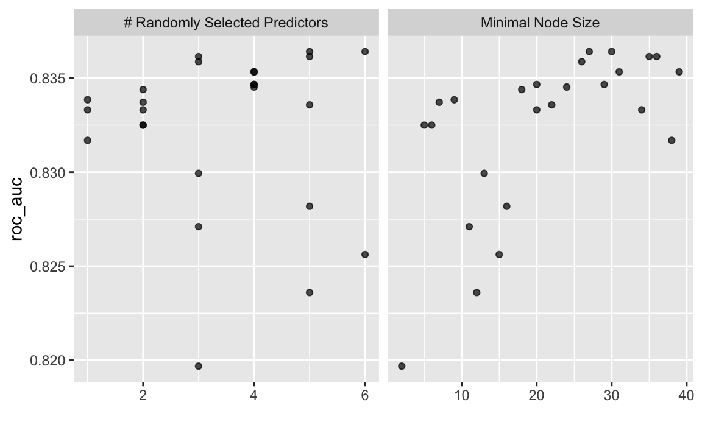
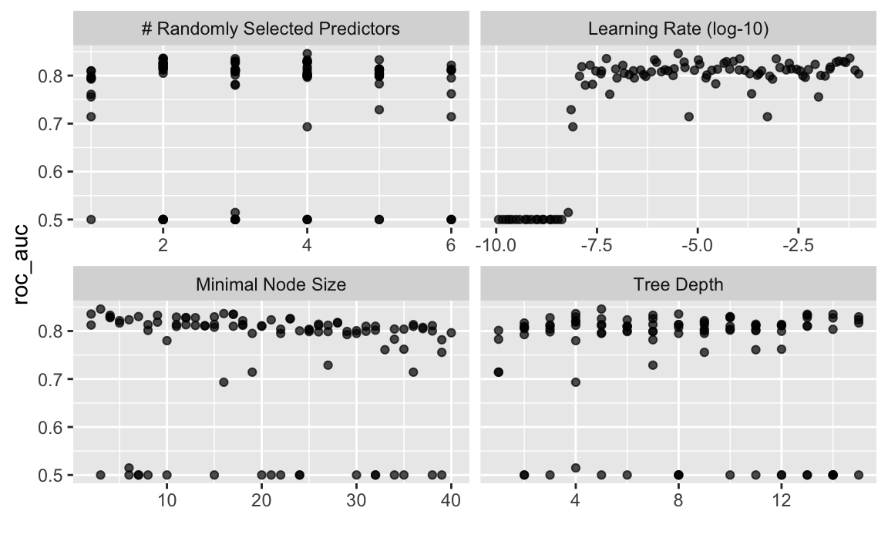

Let’s predict survival at the Titanic disaster using the Kaggle competition data, download from here.
We’ll make use of the tidymodels approach.
library(tidyverse) # data wrangling
library(tidymodels) # modelling
library(broom) # tidy model output
library(DescTools) # Pseudo R^2
library(skimr) # overview on descriptivestraindata_url <- "https://raw.githubusercontent.com/sebastiansauer/Statistiklehre/main/data/titanic/train.csv"
testdata_url <- "https://raw.githubusercontent.com/sebastiansauer/Statistiklehre/main/data/titanic/test.csv" train <- read_csv(traindata_url)
test <- read_csv(testdata_url)glimpse(train)
#> Rows: 891
#> Columns: 12
#> $ PassengerId <dbl> 1, 2, 3, 4, 5, 6, 7, 8, 9, 10, 11, 12, 13, 14, 15, 16, 17…
#> $ Survived <dbl> 0, 1, 1, 1, 0, 0, 0, 0, 1, 1, 1, 1, 0, 0, 0, 1, 0, 1, 0, …
#> $ Pclass <dbl> 3, 1, 3, 1, 3, 3, 1, 3, 3, 2, 3, 1, 3, 3, 3, 2, 3, 2, 3, …
#> $ Name <chr> "Braund, Mr. Owen Harris", "Cumings, Mrs. John Bradley (F…
#> $ Sex <chr> "male", "female", "female", "female", "male", "male", "ma…
#> $ Age <dbl> 22, 38, 26, 35, 35, NA, 54, 2, 27, 14, 4, 58, 20, 39, 14,…
#> $ SibSp <dbl> 1, 1, 0, 1, 0, 0, 0, 3, 0, 1, 1, 0, 0, 1, 0, 0, 4, 0, 1, …
#> $ Parch <dbl> 0, 0, 0, 0, 0, 0, 0, 1, 2, 0, 1, 0, 0, 5, 0, 0, 1, 0, 0, …
#> $ Ticket <chr> "A/5 21171", "PC 17599", "STON/O2. 3101282", "113803", "3…
#> $ Fare <dbl> 7.2500, 71.2833, 7.9250, 53.1000, 8.0500, 8.4583, 51.8625…
#> $ Cabin <chr> NA, "C85", NA, "C123", NA, NA, "E46", NA, NA, NA, "G6", "…
#> $ Embarked <chr> "S", "C", "S", "S", "S", "Q", "S", "S", "S", "C", "S", "S…train <-
train %>%
mutate(Survived = factor(Survived))skim(train)| Name | train |
| Number of rows | 891 |
| Number of columns | 12 |
| _______________________ | |
| Column type frequency: | |
| character | 5 |
| factor | 1 |
| numeric | 6 |
| ________________________ | |
| Group variables | None |
Variable type: character
| skim_variable | n_missing | complete_rate | min | max | empty | n_unique | whitespace |
|---|---|---|---|---|---|---|---|
| Name | 0 | 1.00 | 12 | 82 | 0 | 891 | 0 |
| Sex | 0 | 1.00 | 4 | 6 | 0 | 2 | 0 |
| Ticket | 0 | 1.00 | 3 | 18 | 0 | 681 | 0 |
| Cabin | 687 | 0.23 | 1 | 15 | 0 | 147 | 0 |
| Embarked | 2 | 1.00 | 1 | 1 | 0 | 3 | 0 |
Variable type: factor
| skim_variable | n_missing | complete_rate | ordered | n_unique | top_counts |
|---|---|---|---|---|---|
| Survived | 0 | 1 | FALSE | 2 | 0: 549, 1: 342 |
Variable type: numeric
| skim_variable | n_missing | complete_rate | mean | sd | p0 | p25 | p50 | p75 | p100 | hist |
|---|---|---|---|---|---|---|---|---|---|---|
| PassengerId | 0 | 1.0 | 446.00 | 257.35 | 1.00 | 223.50 | 446.00 | 668.5 | 891.00 | ▇▇▇▇▇ |
| Pclass | 0 | 1.0 | 2.31 | 0.84 | 1.00 | 2.00 | 3.00 | 3.0 | 3.00 | ▃▁▃▁▇ |
| Age | 177 | 0.8 | 29.70 | 14.53 | 0.42 | 20.12 | 28.00 | 38.0 | 80.00 | ▂▇▅▂▁ |
| SibSp | 0 | 1.0 | 0.52 | 1.10 | 0.00 | 0.00 | 0.00 | 1.0 | 8.00 | ▇▁▁▁▁ |
| Parch | 0 | 1.0 | 0.38 | 0.81 | 0.00 | 0.00 | 0.00 | 0.0 | 6.00 | ▇▁▁▁▁ |
| Fare | 0 | 1.0 | 32.20 | 49.69 | 0.00 | 7.91 | 14.45 | 31.0 | 512.33 | ▇▁▁▁▁ |
OK, for age, cabin, and embarked, we have some NAs.
titanic_recipe <-
recipe(Survived ~ ., data = train) %>%
update_role(Name, PassengerId, new_role = "ID") %>% # Use "ID" as ID, not as predictor
step_rm(Ticket, Cabin, Name, PassengerId, Embarked) %>% # remove these vars
step_dummy(all_nominal(), -all_outcomes()) %>% # make dummy variables
step_zv(all_predictors()) %>% # exclude zero variance predictors
step_knnimpute(all_predictors(), neighbors = 3) %>% # impute missing values
step_corr(all_predictors()) %>% # exclude highly correlated vars
step_center(all_predictors(), -all_outcomes()) %>% # center
step_scale(all_predictors(), -all_outcomes()) # set sd=1titanic_recipe
#> Data Recipe
#>
#> Inputs:
#>
#> role #variables
#> ID 2
#> outcome 1
#> predictor 9
#>
#> Operations:
#>
#> Delete terms Ticket, Cabin, Name, PassengerId, Embarked
#> Dummy variables from all_nominal(), -all_outcomes()
#> Zero variance filter on all_predictors()
#> K-nearest neighbor imputation for all_predictors()
#> Correlation filter on all_predictors()
#> Centering for all_predictors(), -all_outcomes()
#> Scaling for all_predictors(), -all_outcomes()lr_mod <-
logistic_reg() %>%
set_engine("glm") %>%
set_mode("classification")lr_mod
#> Logistic Regression Model Specification (classification)
#>
#> Computational engine: glmtitanic_wf1 <-
workflow() %>%
add_model(lr_mod) %>%
add_recipe(titanic_recipe)titanic_wf1
#> ══ Workflow ════════════════════════════════════════════════════════════════════
#> Preprocessor: Recipe
#> Model: logistic_reg()
#>
#> ── Preprocessor ────────────────────────────────────────────────────────────────
#> 7 Recipe Steps
#>
#> ● step_rm()
#> ● step_dummy()
#> ● step_zv()
#> ● step_knnimpute()
#> ● step_corr()
#> ● step_center()
#> ● step_scale()
#>
#> ── Model ───────────────────────────────────────────────────────────────────────
#> Logistic Regression Model Specification (classification)
#>
#> Computational engine: glmtitanic_fit_lr <-
titanic_wf1 %>%
fit(data = train)Model performance on train data:
titanic_fit_lr %>%
pull_workflow_fit() %>%
tidy()
#> # A tibble: 7 x 5
#> term estimate std.error statistic p.value
#> <chr> <dbl> <dbl> <dbl> <dbl>
#> 1 (Intercept) -0.644 0.0912 -7.07 1.57e-12
#> 2 Pclass -0.957 0.121 -7.90 2.73e-15
#> 3 Age -0.525 0.106 -4.93 8.15e- 7
#> 4 SibSp -0.415 0.118 -3.51 4.43e- 4
#> 5 Parch -0.0817 0.0946 -0.865 3.87e- 1
#> 6 Fare 0.117 0.116 1.01 3.11e- 1
#> 7 Sex_male -1.30 0.0948 -13.7 9.19e-43titanic_fit_lr %>%
pull_workflow_fit() %>%
glance()
#> # A tibble: 1 x 8
#> null.deviance df.null logLik AIC BIC deviance df.residual nobs
#> <dbl> <int> <dbl> <dbl> <dbl> <dbl> <int> <int>
#> 1 1187. 890 -395. 805. 838. 791. 884 891pull_workflow_prepped_recipe(titanic_fit_lr)
#> Data Recipe
#>
#> Inputs:
#>
#> role #variables
#> ID 2
#> outcome 1
#> predictor 9
#>
#> Training data contained 891 data points and 708 incomplete rows.
#>
#> Operations:
#>
#> Variables removed Ticket, Cabin, Name, PassengerId, Embarked [trained]
#> Dummy variables from Sex [trained]
#> Zero variance filter removed no terms [trained]
#> K-nearest neighbor imputation for Age, SibSp, Parch, Fare, Sex_male, Pclass [trained]
#> Correlation filter removed no terms [trained]
#> Centering for Pclass, Age, SibSp, Parch, Fare, Sex_male [trained]
#> Scaling for Pclass, Age, SibSp, Parch, Fare, Sex_male [trained]Hm, for some reason, not working. #todo
pull_workflow_fit %>%
PseudoR2()
#> [1] NAtest_with_pred <-
test %>%
bind_cols(predict(titanic_fit_lr, test)) %>%
rename(pred_glm1 = .pred_class)glimpse(test_with_pred)
#> Rows: 418
#> Columns: 12
#> $ PassengerId <dbl> 892, 893, 894, 895, 896, 897, 898, 899, 900, 901, 902, 90…
#> $ Pclass <dbl> 3, 3, 2, 3, 3, 3, 3, 2, 3, 3, 3, 1, 1, 2, 1, 2, 2, 3, 3, …
#> $ Name <chr> "Kelly, Mr. James", "Wilkes, Mrs. James (Ellen Needs)", "…
#> $ Sex <chr> "male", "female", "male", "male", "female", "male", "fema…
#> $ Age <dbl> 34.5, 47.0, 62.0, 27.0, 22.0, 14.0, 30.0, 26.0, 18.0, 21.…
#> $ SibSp <dbl> 0, 1, 0, 0, 1, 0, 0, 1, 0, 2, 0, 0, 1, 1, 1, 1, 0, 0, 1, …
#> $ Parch <dbl> 0, 0, 0, 0, 1, 0, 0, 1, 0, 0, 0, 0, 0, 0, 0, 0, 0, 0, 0, …
#> $ Ticket <chr> "330911", "363272", "240276", "315154", "3101298", "7538"…
#> $ Fare <dbl> 7.8292, 7.0000, 9.6875, 8.6625, 12.2875, 9.2250, 7.6292, …
#> $ Cabin <chr> NA, NA, NA, NA, NA, NA, NA, NA, NA, NA, NA, NA, "B45", NA…
#> $ Embarked <chr> "Q", "S", "Q", "S", "S", "S", "Q", "S", "C", "S", "S", "S…
#> $ pred_glm1 <fct> 0, 0, 0, 0, 1, 0, 1, 0, 1, 0, 0, 0, 1, 0, 1, 1, 0, 0, 1, …test_with_pred %>%
select(PassengerId, Survived = pred_glm1) %>%
write_csv(file = "titanic-glm1.csv")rf_mod1 <-
rand_forest() %>%
set_engine("ranger") %>%
set_mode("classification")rf_mod1
#> Random Forest Model Specification (classification)
#>
#> Computational engine: rangerrf_workflow1 <-
workflow() %>%
add_model(rf_mod1) %>%
add_recipe(titanic_recipe)rf_workflow1
#> ══ Workflow ════════════════════════════════════════════════════════════════════
#> Preprocessor: Recipe
#> Model: rand_forest()
#>
#> ── Preprocessor ────────────────────────────────────────────────────────────────
#> 7 Recipe Steps
#>
#> ● step_rm()
#> ● step_dummy()
#> ● step_zv()
#> ● step_knnimpute()
#> ● step_corr()
#> ● step_center()
#> ● step_scale()
#>
#> ── Model ───────────────────────────────────────────────────────────────────────
#> Random Forest Model Specification (classification)
#>
#> Computational engine: rangerrf_fit1 <-
rf_workflow1 %>%
fit(data = train)test_with_pred <-
test %>%
mutate(pred_rf1 = predict(rf_fit1, test)) %>%
unnest(pred_rf1) %>%
unnest(pred_rf1)glimpse(test_with_pred)
#> Rows: 174,724
#> Columns: 12
#> $ PassengerId <dbl> 892, 892, 892, 892, 892, 892, 892, 892, 892, 892, 892, 89…
#> $ Pclass <dbl> 3, 3, 3, 3, 3, 3, 3, 3, 3, 3, 3, 3, 3, 3, 3, 3, 3, 3, 3, …
#> $ Name <chr> "Kelly, Mr. James", "Kelly, Mr. James", "Kelly, Mr. James…
#> $ Sex <chr> "male", "male", "male", "male", "male", "male", "male", "…
#> $ Age <dbl> 34.5, 34.5, 34.5, 34.5, 34.5, 34.5, 34.5, 34.5, 34.5, 34.…
#> $ SibSp <dbl> 0, 0, 0, 0, 0, 0, 0, 0, 0, 0, 0, 0, 0, 0, 0, 0, 0, 0, 0, …
#> $ Parch <dbl> 0, 0, 0, 0, 0, 0, 0, 0, 0, 0, 0, 0, 0, 0, 0, 0, 0, 0, 0, …
#> $ Ticket <chr> "330911", "330911", "330911", "330911", "330911", "330911…
#> $ Fare <dbl> 7.8292, 7.8292, 7.8292, 7.8292, 7.8292, 7.8292, 7.8292, 7…
#> $ Cabin <chr> NA, NA, NA, NA, NA, NA, NA, NA, NA, NA, NA, NA, NA, NA, N…
#> $ Embarked <chr> "Q", "Q", "Q", "Q", "Q", "Q", "Q", "Q", "Q", "Q", "Q", "Q…
#> $ pred_rf1 <fct> 0, 0, 0, 0, 0, 0, 0, 0, 1, 0, 0, 0, 1, 0, 1, 1, 0, 0, 0, …test_with_pred %>%
select(PassengerId, Survived = .pred_rf2) %>%
write_csv(file = "titanic-rf1.csv")cores <- parallel::detectCores()
cores
#> [1] 8rf_mod2 <-
rand_forest(mtry = tune(), min_n = tune(), trees = 1000) %>%
set_engine("ranger", num.threads = cores) %>%
set_mode("classification")rf_mod2
#> Random Forest Model Specification (classification)
#>
#> Main Arguments:
#> mtry = tune()
#> trees = 1000
#> min_n = tune()
#>
#> Engine-Specific Arguments:
#> num.threads = cores
#>
#> Computational engine: rangerParameters that can be tuned:
rf_mod2 %>%
parameters()
#> Collection of 2 parameters for tuning
#>
#> identifier type object
#> mtry mtry nparam[?]
#> min_n min_n nparam[+]
#>
#> Model parameters needing finalization:
#> # Randomly Selected Predictors ('mtry')
#>
#> See `?dials::finalize` or `?dials::update.parameters` for more information.rf_workflow2 <-
workflow() %>%
add_model(rf_mod2) %>%
add_recipe(titanic_recipe)rf_workflow2
#> ══ Workflow ════════════════════════════════════════════════════════════════════
#> Preprocessor: Recipe
#> Model: rand_forest()
#>
#> ── Preprocessor ────────────────────────────────────────────────────────────────
#> 7 Recipe Steps
#>
#> ● step_rm()
#> ● step_dummy()
#> ● step_zv()
#> ● step_knnimpute()
#> ● step_corr()
#> ● step_center()
#> ● step_scale()
#>
#> ── Model ───────────────────────────────────────────────────────────────────────
#> Random Forest Model Specification (classification)
#>
#> Main Arguments:
#> mtry = tune()
#> trees = 1000
#> min_n = tune()
#>
#> Engine-Specific Arguments:
#> num.threads = cores
#>
#> Computational engine: rangerset.seed(234)
val_set <- validation_split(train,
strata = Survived,
prop = 0.80)set.seed(42)
t1 <- Sys.time()
rf_res2 <-
rf_workflow2 %>%
tune_grid(val_set,
grid = 25,
control = control_grid(save_pred = TRUE),
metrics = metric_set(roc_auc))
t2 <- Sys.time()
t2 - t1
#> Time difference of 15.30672 secsrf_res2 %>%
show_best(metric = "roc_auc")
#> # A tibble: 5 x 8
#> mtry min_n .metric .estimator mean n std_err .config
#> <int> <int> <chr> <chr> <dbl> <int> <dbl> <chr>
#> 1 6 27 roc_auc binary 0.836 1 NA Preprocessor1_Model07
#> 2 5 30 roc_auc binary 0.836 1 NA Preprocessor1_Model17
#> 3 3 35 roc_auc binary 0.836 1 NA Preprocessor1_Model15
#> 4 5 36 roc_auc binary 0.836 1 NA Preprocessor1_Model19
#> 5 3 26 roc_auc binary 0.836 1 NA Preprocessor1_Model03autoplot(rf_res2)
rf_best2 <-
rf_res2 %>%
select_best(metric = "roc_auc")
rf_best2
#> # A tibble: 1 x 3
#> mtry min_n .config
#> <int> <int> <chr>
#> 1 6 27 Preprocessor1_Model07last_rf_mod <-
rand_forest(mtry = 1, min_n = 20, trees = 1000) %>%
set_engine("ranger", num.threads = cores, importance = "impurity") %>%
set_mode("classification")Update workflow with best fit parameters
last_rf_workflow2 <-
rf_workflow2 %>%
update_model(last_rf_mod)set.seed(345)
last_rf_fit2 <-
last_rf_workflow2 %>%
fit(data = train)test_with_pred <-
test %>%
mutate(pred_rf2 = predict(last_rf_fit2, test)) %>%
unnest(pred_rf2) %>%
unnest(pred_rf2)glimpse(test_with_pred)
#> Rows: 174,724
#> Columns: 12
#> $ PassengerId <dbl> 892, 892, 892, 892, 892, 892, 892, 892, 892, 892, 892, 89…
#> $ Pclass <dbl> 3, 3, 3, 3, 3, 3, 3, 3, 3, 3, 3, 3, 3, 3, 3, 3, 3, 3, 3, …
#> $ Name <chr> "Kelly, Mr. James", "Kelly, Mr. James", "Kelly, Mr. James…
#> $ Sex <chr> "male", "male", "male", "male", "male", "male", "male", "…
#> $ Age <dbl> 34.5, 34.5, 34.5, 34.5, 34.5, 34.5, 34.5, 34.5, 34.5, 34.…
#> $ SibSp <dbl> 0, 0, 0, 0, 0, 0, 0, 0, 0, 0, 0, 0, 0, 0, 0, 0, 0, 0, 0, …
#> $ Parch <dbl> 0, 0, 0, 0, 0, 0, 0, 0, 0, 0, 0, 0, 0, 0, 0, 0, 0, 0, 0, …
#> $ Ticket <chr> "330911", "330911", "330911", "330911", "330911", "330911…
#> $ Fare <dbl> 7.8292, 7.8292, 7.8292, 7.8292, 7.8292, 7.8292, 7.8292, 7…
#> $ Cabin <chr> NA, NA, NA, NA, NA, NA, NA, NA, NA, NA, NA, NA, NA, NA, N…
#> $ Embarked <chr> "Q", "Q", "Q", "Q", "Q", "Q", "Q", "Q", "Q", "Q", "Q", "Q…
#> $ pred_rf2 <fct> 0, 0, 0, 0, 1, 0, 0, 0, 0, 0, 0, 0, 1, 0, 1, 1, 0, 0, 0, …test_with_pred %>%
select(PassengerId, Survived = .pred_rf2) %>%
write_csv(file = "titanic-rf2.csv")boost_mod <-
boost_tree(mtry = tune(),
min_n = tune(),
learn_rate = tune(),
tree_depth = tune()) %>%
set_engine("xgboost", num.threads = cores) %>%
set_mode("classification")boost_mod
#> Boosted Tree Model Specification (classification)
#>
#> Main Arguments:
#> mtry = tune()
#> min_n = tune()
#> tree_depth = tune()
#> learn_rate = tune()
#>
#> Engine-Specific Arguments:
#> num.threads = cores
#>
#> Computational engine: xgboostTranslate to xgboost() specs:
translate(boost_mod)
#> Boosted Tree Model Specification (classification)
#>
#> Main Arguments:
#> mtry = tune()
#> min_n = tune()
#> tree_depth = tune()
#> learn_rate = tune()
#>
#> Engine-Specific Arguments:
#> num.threads = cores
#>
#> Computational engine: xgboost
#>
#> Model fit template:
#> parsnip::xgb_train(x = missing_arg(), y = missing_arg(), colsample_bytree = tune(),
#> min_child_weight = tune(), max_depth = tune(), eta = tune(),
#> num.threads = cores, nthread = 1, verbose = 0)Why does it say ntread = 1? Should be more cores, right? #todo
Parameters that can be tuned:
boost_mod %>%
parameters()
#> Collection of 4 parameters for tuning
#>
#> identifier type object
#> mtry mtry nparam[?]
#> min_n min_n nparam[+]
#> tree_depth tree_depth nparam[+]
#> learn_rate learn_rate nparam[+]
#>
#> Model parameters needing finalization:
#> # Randomly Selected Predictors ('mtry')
#>
#> See `?dials::finalize` or `?dials::update.parameters` for more information.boost_wf <-
workflow() %>%
add_model(boost_mod) %>%
add_recipe(titanic_recipe)boost_wf
#> ══ Workflow ════════════════════════════════════════════════════════════════════
#> Preprocessor: Recipe
#> Model: boost_tree()
#>
#> ── Preprocessor ────────────────────────────────────────────────────────────────
#> 7 Recipe Steps
#>
#> ● step_rm()
#> ● step_dummy()
#> ● step_zv()
#> ● step_knnimpute()
#> ● step_corr()
#> ● step_center()
#> ● step_scale()
#>
#> ── Model ───────────────────────────────────────────────────────────────────────
#> Boosted Tree Model Specification (classification)
#>
#> Main Arguments:
#> mtry = tune()
#> min_n = tune()
#> tree_depth = tune()
#> learn_rate = tune()
#>
#> Engine-Specific Arguments:
#> num.threads = cores
#>
#> Computational engine: xgboostset.seed(234)
val_set <- validation_split(train,
strata = Survived,
prop = 0.80)set.seed(42)
t1 <- Sys.time()
boost_fit <-
boost_wf %>%
tune_grid(val_set,
grid = 100,
control = control_grid(save_pred = TRUE),
metrics = metric_set(roc_auc))
t2 <- Sys.time()
t2 - t1
#> Time difference of 49.00957 secsboost_fit %>%
show_best(metric = "roc_auc")
#> # A tibble: 5 x 10
#> mtry min_n tree_depth learn_rate .metric .estimator mean n std_err
#> <int> <int> <int> <dbl> <chr> <chr> <dbl> <int> <dbl>
#> 1 4 3 5 3.27e-6 roc_auc binary 0.846 1 NA
#> 2 2 16 4 5.95e-2 roc_auc binary 0.836 1 NA
#> 3 3 2 8 5.45e-8 roc_auc binary 0.835 1 NA
#> 4 2 17 13 1.10e-4 roc_auc binary 0.835 1 NA
#> 5 2 17 14 8.88e-4 roc_auc binary 0.835 1 NA
#> # … with 1 more variable: .config <chr>autoplot(boost_fit)
boost_best <-
boost_fit %>%
select_best(metric = "roc_auc")
boost_best
#> # A tibble: 1 x 5
#> mtry min_n tree_depth learn_rate .config
#> <int> <int> <int> <dbl> <chr>
#> 1 4 3 5 0.00000327 Preprocessor1_Model057last_boost_mod <-
boost_tree(mtry = 4,
min_n = 3,
tree_depth = 5,
trees = 1000) %>%
set_engine("xgboost",
num.threads = cores,
importance = "impurity") %>%
set_mode("classification")Update workflow with best fit parameters
last_boost_workflow <-
boost_wf %>%
update_model(last_boost_mod)set.seed(345)
last_boost_fit <-
last_boost_workflow %>%
fit(data = train)
#> [13:05:25] WARNING: amalgamation/../src/learner.cc:516:
#> Parameters: { importance, num_threads } might not be used.
#>
#> This may not be accurate due to some parameters are only used in language bindings but
#> passed down to XGBoost core. Or some parameters are not used but slip through this
#> verification. Please open an issue if you find above cases.test_with_pred <-
test %>%
mutate(pred_boost = predict(last_boost_fit, test)) %>%
unnest(pred_boost) %>%
unnest(pred_boost)glimpse(test_with_pred)
#> Rows: 174,724
#> Columns: 12
#> $ PassengerId <dbl> 892, 892, 892, 892, 892, 892, 892, 892, 892, 892, 892, 89…
#> $ Pclass <dbl> 3, 3, 3, 3, 3, 3, 3, 3, 3, 3, 3, 3, 3, 3, 3, 3, 3, 3, 3, …
#> $ Name <chr> "Kelly, Mr. James", "Kelly, Mr. James", "Kelly, Mr. James…
#> $ Sex <chr> "male", "male", "male", "male", "male", "male", "male", "…
#> $ Age <dbl> 34.5, 34.5, 34.5, 34.5, 34.5, 34.5, 34.5, 34.5, 34.5, 34.…
#> $ SibSp <dbl> 0, 0, 0, 0, 0, 0, 0, 0, 0, 0, 0, 0, 0, 0, 0, 0, 0, 0, 0, …
#> $ Parch <dbl> 0, 0, 0, 0, 0, 0, 0, 0, 0, 0, 0, 0, 0, 0, 0, 0, 0, 0, 0, …
#> $ Ticket <chr> "330911", "330911", "330911", "330911", "330911", "330911…
#> $ Fare <dbl> 7.8292, 7.8292, 7.8292, 7.8292, 7.8292, 7.8292, 7.8292, 7…
#> $ Cabin <chr> NA, NA, NA, NA, NA, NA, NA, NA, NA, NA, NA, NA, NA, NA, N…
#> $ Embarked <chr> "Q", "Q", "Q", "Q", "Q", "Q", "Q", "Q", "Q", "Q", "Q", "Q…
#> $ pred_boost <fct> 0, 0, 1, 1, 0, 0, 0, 0, 1, 0, 0, 0, 1, 0, 1, 1, 0, 0, 1, …test_with_pred %>%
select(PassengerId, Survived = pred_boost) %>%
write_csv(file = "titanic-boost.csv")tidymodels appear to be a nice framework, but not without some difficulties. I needed some time to wrap my head around it; in effect, I’m still picking it up.
Computing many models in the way I worked here is bound to end up in disaster: Too many object to rename and to keep track off. There are better ways needed such as this one. Alternatively, one might seek shelter in object oriented programming, which is beautiful in theory, but not without complexites. See mlr3 for a great implementation.
#> ─ Session info ───────────────────────────────────────────────────────────────────────────────────────────────────────
#> setting value
#> version R version 4.0.2 (2020-06-22)
#> os macOS Catalina 10.15.7
#> system x86_64, darwin17.0
#> ui X11
#> language (EN)
#> collate en_US.UTF-8
#> ctype en_US.UTF-8
#> tz Europe/Berlin
#> date 2020-12-08
#>
#> ─ Packages ───────────────────────────────────────────────────────────────────────────────────────────────────────────
#> package * version date lib source
#> assertthat 0.2.1 2019-03-21 [1] CRAN (R 4.0.0)
#> backports 1.2.0 2020-11-02 [1] CRAN (R 4.0.2)
#> blogdown 0.21 2020-10-11 [1] CRAN (R 4.0.2)
#> bookdown 0.21 2020-10-13 [1] CRAN (R 4.0.2)
#> broom 0.7.2 2020-10-20 [1] CRAN (R 4.0.2)
#> callr 3.5.1 2020-10-13 [1] CRAN (R 4.0.2)
#> cellranger 1.1.0 2016-07-27 [1] CRAN (R 4.0.0)
#> cli 2.2.0 2020-11-20 [1] CRAN (R 4.0.2)
#> codetools 0.2-16 2018-12-24 [2] CRAN (R 4.0.2)
#> colorspace 2.0-0 2020-11-11 [1] CRAN (R 4.0.2)
#> crayon 1.3.4 2017-09-16 [1] CRAN (R 4.0.0)
#> DBI 1.1.0 2019-12-15 [1] CRAN (R 4.0.0)
#> dbplyr 2.0.0 2020-11-03 [1] CRAN (R 4.0.2)
#> desc 1.2.0 2018-05-01 [1] CRAN (R 4.0.0)
#> devtools 2.3.2 2020-09-18 [1] CRAN (R 4.0.2)
#> digest 0.6.27 2020-10-24 [1] CRAN (R 4.0.2)
#> dplyr * 1.0.2 2020-08-18 [1] CRAN (R 4.0.2)
#> ellipsis 0.3.1 2020-05-15 [1] CRAN (R 4.0.0)
#> evaluate 0.14 2019-05-28 [1] CRAN (R 4.0.0)
#> fansi 0.4.1 2020-01-08 [1] CRAN (R 4.0.0)
#> forcats * 0.5.0 2020-03-01 [1] CRAN (R 4.0.0)
#> fs 1.5.0 2020-07-31 [1] CRAN (R 4.0.2)
#> generics 0.1.0 2020-10-31 [1] CRAN (R 4.0.2)
#> ggplot2 * 3.3.2 2020-06-19 [1] CRAN (R 4.0.0)
#> glue 1.4.2 2020-08-27 [1] CRAN (R 4.0.2)
#> gtable 0.3.0 2019-03-25 [1] CRAN (R 4.0.0)
#> haven 2.3.1 2020-06-01 [1] CRAN (R 4.0.0)
#> hms 0.5.3 2020-01-08 [1] CRAN (R 4.0.0)
#> htmltools 0.5.0 2020-06-16 [1] CRAN (R 4.0.0)
#> httr 1.4.2 2020-07-20 [1] CRAN (R 4.0.2)
#> jsonlite 1.7.1 2020-09-07 [1] CRAN (R 4.0.2)
#> knitr 1.30 2020-09-22 [1] CRAN (R 4.0.2)
#> lifecycle 0.2.0 2020-03-06 [1] CRAN (R 4.0.0)
#> lubridate 1.7.9.2 2020-11-13 [1] CRAN (R 4.0.2)
#> magrittr 2.0.1 2020-11-17 [1] CRAN (R 4.0.2)
#> memoise 1.1.0 2017-04-21 [1] CRAN (R 4.0.0)
#> modelr 0.1.8 2020-05-19 [1] CRAN (R 4.0.0)
#> munsell 0.5.0 2018-06-12 [1] CRAN (R 4.0.0)
#> pillar 1.4.7 2020-11-20 [1] CRAN (R 4.0.2)
#> pkgbuild 1.1.0 2020-07-13 [1] CRAN (R 4.0.2)
#> pkgconfig 2.0.3 2019-09-22 [1] CRAN (R 4.0.0)
#> pkgload 1.1.0 2020-05-29 [1] CRAN (R 4.0.0)
#> prettyunits 1.1.1 2020-01-24 [1] CRAN (R 4.0.0)
#> processx 3.4.5 2020-11-30 [1] CRAN (R 4.0.2)
#> ps 1.4.0 2020-10-07 [1] CRAN (R 4.0.2)
#> purrr * 0.3.4 2020-04-17 [1] CRAN (R 4.0.0)
#> R6 2.5.0 2020-10-28 [1] CRAN (R 4.0.2)
#> Rcpp 1.0.5 2020-07-06 [1] CRAN (R 4.0.2)
#> readr * 1.4.0 2020-10-05 [1] CRAN (R 4.0.2)
#> readxl 1.3.1 2019-03-13 [1] CRAN (R 4.0.0)
#> remotes 2.2.0 2020-07-21 [1] CRAN (R 4.0.2)
#> reprex 0.3.0 2019-05-16 [1] CRAN (R 4.0.0)
#> rlang 0.4.9 2020-11-26 [1] CRAN (R 4.0.2)
#> rmarkdown 2.5 2020-10-21 [1] CRAN (R 4.0.2)
#> rprojroot 2.0.2 2020-11-15 [1] CRAN (R 4.0.2)
#> rstudioapi 0.13 2020-11-12 [1] CRAN (R 4.0.2)
#> rvest 0.3.6 2020-07-25 [1] CRAN (R 4.0.2)
#> scales 1.1.1 2020-05-11 [1] CRAN (R 4.0.0)
#> sessioninfo 1.1.1 2018-11-05 [1] CRAN (R 4.0.0)
#> stringi 1.5.3 2020-09-09 [1] CRAN (R 4.0.2)
#> stringr * 1.4.0 2019-02-10 [1] CRAN (R 4.0.0)
#> testthat 3.0.0 2020-10-31 [1] CRAN (R 4.0.2)
#> tibble * 3.0.4 2020-10-12 [1] CRAN (R 4.0.2)
#> tidyr * 1.1.2 2020-08-27 [1] CRAN (R 4.0.2)
#> tidyselect 1.1.0 2020-05-11 [1] CRAN (R 4.0.0)
#> tidyverse * 1.3.0 2019-11-21 [1] CRAN (R 4.0.0)
#> usethis 1.6.3 2020-09-17 [1] CRAN (R 4.0.2)
#> vctrs 0.3.5 2020-11-17 [1] CRAN (R 4.0.2)
#> withr 2.3.0 2020-09-22 [1] CRAN (R 4.0.2)
#> xfun 0.19 2020-10-30 [1] CRAN (R 4.0.2)
#> xml2 1.3.2 2020-04-23 [1] CRAN (R 4.0.0)
#> yaml 2.2.1 2020-02-01 [1] CRAN (R 4.0.0)
#>
#> [1] /Users/sebastiansaueruser/Rlibs
#> [2] /Library/Frameworks/R.framework/Versions/4.0/Resources/library